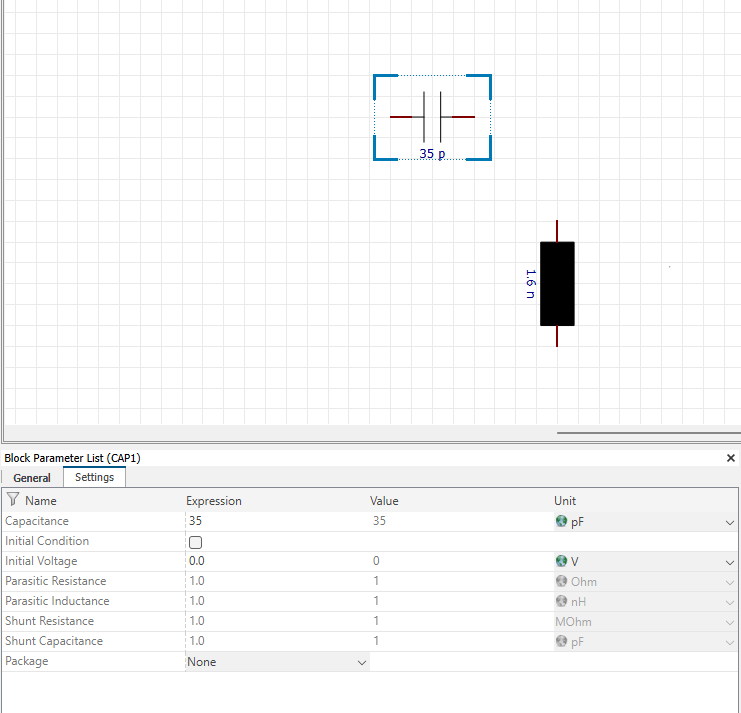
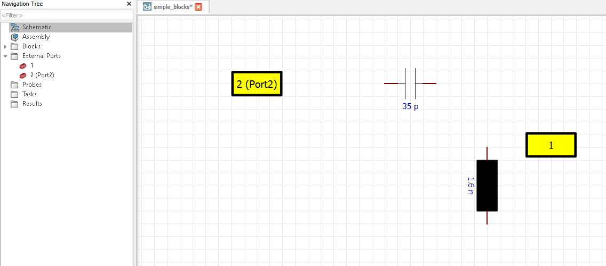
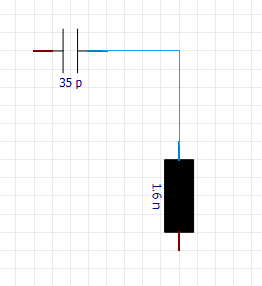

Creating & Connecting Components¶
When working with the Design Studio, the most important parts are the blocks that implement the physical behavior of an elementary subsystem.
Please run the following preparations:
from pathlib import Path
from typing import Tuple
import tempfile
import cst.interface
project_dir = Path(tempfile.mkdtemp())
print(f"Working in temporary directory: {project_dir}")
de = cst.interface.DesignEnvironment.connect_to_any_or_new()
Blocks¶
The code below shows a function to create a simple block. Each step is described in more detail further down.
def create_block(
prj: cst.interface.Project,
block_type: str,
*,
name: str = None,
property: dict = None,
position: Tuple[int, int] = None,
rotation: int = None,
):
"""Creates a new block in the given project of the given type, more attributes or the block are optional"""
block = prj.schematic.Block
block.Reset()
block.Type(block_type)
if name:
block.Name(name)
if property:
for key, value in property.items():
block.SetDoubleProperty(key, value)
if position:
block.Position(position[0], position[1])
if rotation:
block.Rotate(rotation)
block.Create()
This function is used in the following code block and its results are shown in the image below the code.
# start a new ds project
prj = de.new_ds()
create_block(prj, r"CircuitBasic\Capacitor")
create_block(
prj,
r"CircuitBasic\Inductor",
name="IND",
position=(50200, 50200),
rotation=90,
property={"Inductance": "1.6"},
)
# save the project
prj.save( project_dir / "simple_blocks.cst", allow_overwrite=True)
Using prj.schematic.Block we can reference the Block-Object.
The method Reset() makes sure that the block has no set attributes.
Be aware, that calling
prj.schematic.Blockdoes not create a new instance of a block, but references the Object. So you should always use theReset()method before working with a new or different block, to make sure that no attributes from the previous block are transferred.
# examine the project above:
block = prj.schematic.Block # abbreviation
block.Reset()
block.Name("CAP1")
Block Types¶
block.Type(r"CircuitBasic\Inductor")
Before creating a block, its Type has to be specified. After creation, the Type of the block cannot be modified.
A list of all possible block Types can be found here.
The code shown above would set the block to an inductor.
The methods GetTypeName() or GetTypeShortName() return the type of the currently active block.
# continuing with the above block:
print(block.GetTypeName())
print(block.GetTypeShortName())
Block Name¶
We will play around with inductor.
# set name when creating or activate a block for modification
block.Reset()
block.Name("IND")
# rename
block.SetName("IND_1")
As shown above, there are two ways to set the name of a block.
When creating a block, the name is set using Name("block_name").
(If no name is set, a default name will be assigned. But this makes it harder to find/identify the block later.)
Using the Name("block_name") method, we can also activate an already existing block. Afterwards modifications will apply
to this block.
One of these modifications could be assigning a new name using SetName("block_name"):
The existing block activated by Name is renamed to the new name set by SetName.
Block Properties¶
block.SetDoubleProperty("Inductance", "1.6")
The property of a block can be set as seen above. Depending on what property is to be set and what value is to be assigned, one of the following methods has to be chosen.
SetDoubleProperty(propertyname, value)
SetIntegerProperty(propertyname, value)
SetBoolProperty(propertyname, value)
SetStringProperty(propertyname, value)
SetDoubleArrayProperty(propertyname,value)
SetIntegerArrayProperty(propertyname, value)
SetStringArrayProperty(propertyname, value)
The “propertyname” and the “value” are passed as string. The list of properties available is individual for each type of block and can be found in the block category of the Circuits & Systems Online Help.
The properies of the blocks can also be set or changed after they are created.
Block creation¶
block.Create()
To create a block the method Create() is used.
Move Blocks¶
block.Position(100, 100)
The Position of a Block is set to the center of the schematic (50000, 50000) by default.
If a Block already exists at this position,
the default for the next block will be moved slightly to the right and bottom.
Using the Position method and passing two integer values, the Position can be set absolutely.
The Move method moves the block relatively by the given offsets in X- and Y-direction.
Rotate Blocks¶
block.Rotate(90)
To Rotate a Block, Rotate is used.
This method rotates the block by the given angle in degrees.
A block may only be rotated by multiples of 90 degrees.
Working with created Blocks¶
We now will to give the capacitor a value for its capacitance, as we did not declare this when it was created.
This code uses the function get_block_names, which is shown below.
def get_block_names(project: cst.interface.Project) -> list[str]:
"""Yields all block names of the given project"""
names = []
block = project.schematic.Block
block.StartBlockNameIteration()
while True:
name = block.GetNextBlockName()
if name == "":
break
else:
names.append(name)
return names
We iterate through the names that get_block_names returns.
Using the method Name on the Block-Object we can activate the block.
To check if the type of the block is “Capacitor” we can use GetTypeName,
which returns the type-name as string.
Now we can change the property value the same way as in Block Properties.
# continue with open `prj`
block = prj.schematic.Block
for name in get_block_names(prj):
block.Reset()
block.Name(name)
if block.GetTypeName() == "Capacitor":
block.SetDoubleProperty("Capacitance", "35")
block.SetLocalUnitForProperty("Capacitance", "pF")
The result of this is shown in the image below. The changed capacitance is shown in the “Block Parameter List” and beneath the block itself.

External Port¶
External ports represent sources or sinks in the system. Depending on the defined task, the type of a source/sink may vary. For instance, a source may deliver a pulse signal for a time domain simulation task, and it may deliver a specific complex amplitude for an AC simulation task.
def create_external_port(
project: cst.interface.Project,
*,
name: str = None,
label: str = None,
position: (int, int) = None,
rotation: int = None,
):
"""Creates a new external port in the given project, more attributes or the block are optional"""
port = project.schematic.ExternalPort
port.Reset()
if name:
port.Name(name)
if label:
port.SetLabel(label)
if position:
port.Position(position[0], position[1])
if rotation:
port.Rotate(rotation)
port.Create()
To create External Ports, we can use the function shown above. The Ports are created similar to blocks, except that they do not need a type. Additionally ports can have a label. The label is an textual identifier of the external port that is shown in rounded brackets after the port name when referring to it. All Parameters of the ports can be changed after creation.
Using the following code, we add two external ports to the project from earlier.
# continue with `prj`!
create_external_port(prj)
create_external_port(prj, label="Port2", position=(49750, 50000))
The ports are created as seen in the image below.

Nets¶
The Net Object is an object referring to the electrical connection topology on the schematic. Use this object to query or manipulate the connection topology.
For connecting the components, we created the function connect_components.
The project instance is passed,
as well as an array holding the components and the corresponding pins for the specific net.
def connect_components(prj: cst.interface.Project, net_list: list[list], *, net_name: str = ""):
"""
Creates a net and connects the components given as ["Component Type", "Component Name", Port index]
within the net.
"""
net = prj.schematic.Net
net.AddComponentPorts(net_name, net_list, False)
net.Apply()
This function connects the pins of the components given in the array “net_list”. Each element in the array has to have three elements:
Componenttype (“Block”, “Externalport” or “Probe”)
Componentname
Pin number of the component that should be connected to the net
In the code below, this is used to connect the two blocks created earlier in this guide.
# continue with `prj`
# Define components to be connected ["Component Type", "Component Name", Port index]
component1 = ["Block", "CAP1", 1]
component2 = ["Block", "IND_1", 0]
connect_components(prj, [component1, component2])
After running this, the two blocks are connected.

Circuit Probe¶
Probes can be placed on any connector. They record voltages, currents and quantities derived from those for circuit simulation tasks.
def create_probe(
prj: cst.interface.Project,
block_type: str,
comp_name: str,
pin_name: str,
dir_inwards: bool,
*,
name: str = None,
):
"""Creates a new circuit probe, at the given component (block_type,name & pin) in the given direction"""
probe = prj.schematic.CircuitProbe
probe.Reset()
probe.SetBlockPin(block_type, comp_name, pin_name, dir_inwards)
if name:
probe.Name(name)
probe.Create()
# test
create_probe(prj, "B", 'CAP1', '2', False, name='My Probe')
The above code shows a function that creates a Circuit Probe. This function needs:
the current project
the component type (“B” for Block or “P” for Port) it should be connected to
the pinname of that component
a boolean to indicate if the probe should be in the direction of the given component or not
Optional, a name can be passed for the probe. If no name is passed, a default name is set.
Probes can only be created by referencing a connected pin of a component!